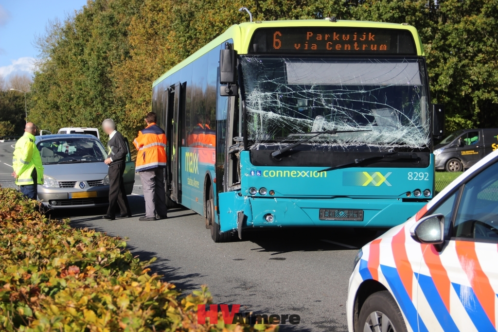
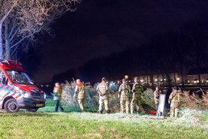
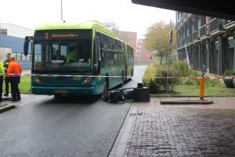
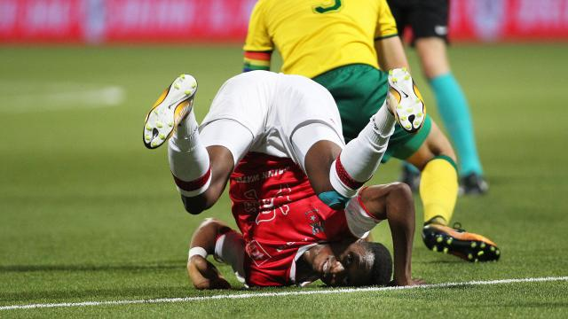

Gewonde na ongeval tussen auto en busMaandag heeft er aan het einde van de ochtend een ongeval plaats gevonden tussen een auto en een bus. |

Auto rijdt Hoge Vaart inIn de nacht van zaterdag op zondag is een auto de Hoge Vaart ingereden. Twee personen zijn met onderkoelingsverschijnselen naar het ziekenhuis gebracht. |

Aanrijding tussen scooter en stadsbus HavenDinsdagochtend heeft er een aanrijding plaatsgevonden tussen een scooter en een stadsbus bij het centrum van Haven. Er zijn meerdere slachtoffers behandeld door de ambulancedienst. |

AZ wordt zware dobber voor City FCEr zijn altijd mogelijkheden om te winnen van een eredivisieploeg in het bekertoernooi. Dat zegt trainer Jack de Gier van Almere City FC tegen zijn spelers. |
|---|